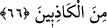

olduklarını bırakmamız için mi geldin? Eğer doğrulardan isen, bizi tehdit ettiğini
(azabı) bize getir.
71. (Hûd) dedi ki: “Üzerinize Rabbinizden bir azap ve bir hışım inmiştir.
Haklarında Allah’ın hiçbir delil indirmediği, sadece sizin ve atalarınızın taktığı kuru
isimler hususunda benimle tartışıyor musunuz? Bekleyin öyleyse, şüphesiz ben de
sizinle beraber bekleyenlerdenim!”
72. Onu ve onunla beraber olanları rahmetimizle kurtardık ve ayetlerimizi
yalanlayıp da iman etmeyenlerin kökünü kestik.
“Âd kavmine de kardeşleri” yani, dînî açıdan değil, nesep açısından onlardan birisi
olan “Hûd’u” gönderdik.
Âd kavmi Yemen’de bulunan kavimlerden biridir. Meliklerinin ismi “Âd” olduğu için
ona nisbet edilmişlerdir. Meliklerinin şeceresi şöyledir: Âd b. İrem b. Sâm b. Nûh. Hûd
(a.s.)’ın şeceresi ise şöyledir: Hûd b. Abdullah b. Riyâh b. Hulûd b. Âd b. Avs b. İrem
b. Sâm b. Nûh.
Allah Teâlâ peygamberini bu kabileden göndermiştir. Çünkü onlar peygamberlerinin
sözünü daha iyi anlayan, onun doğruluk ve emanet hususunda halini daha iyi bilen ve
ona tâbi olmaya daha yakın kimselerdi.
Farsça tefsirde şöyle denilmektedir: Ad kavmi, iri yarı ve uzun boylu idi. Bütün
yeryüzünde onlardan daha büyük bir kavim yoktu. Kalabalıktılar. Çok malları vardı.
Puta tapıyorlardı. Hak Teâlâ Hûd’u onlara gönderdi. Hûd, kabilesinin arasına geldi ve
onları Hakk’a davet etti.
O kavmine: “Ey kavmim,” yalnız “Allah’a kulluk edin, sizin O’ndan başka tanrınız
yoktur.” Hiç düşünüp de Allah Teâlâ’nın azabından sakınmaz mısınız?” dedi.”
66. Kavminden ileri gelen kâfirler dediler ki: Biz seni kesinlikle bir beyinsizlik
içinde görüyoruz ve gerçekten seni yalancılardan sanıyoruz.
“Kavminden ileri gelen inkarcılar dediler ki:” Kavmin ileri gelenleri, küfür ile
vasfedildiler. Çünkü Nûh kavminin ileri gelenlerinde olduğu gibi onların hepsi kâfir
değildi. İçlerinde Mersed b. Sa‘d gibi Hûd (a.s.)’a iman edip imanını gizleyen ve vakti
gelince açıklayan kimseler vardı. İleride görüleceği üzere yağmur duasında bulunmak
üzere Mekke’ye gelmiştir. Nitekim Mersed bir şiirinde şöyle der:
“Âd kavmi, peygamberlerine isyan ettiler